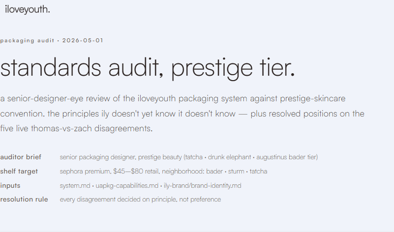
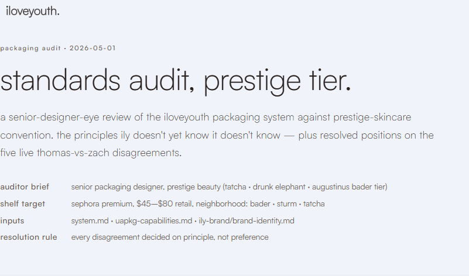
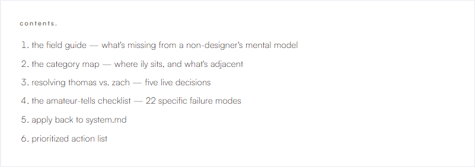
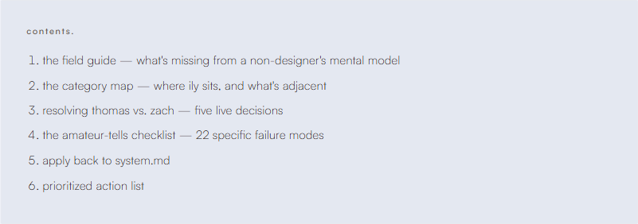
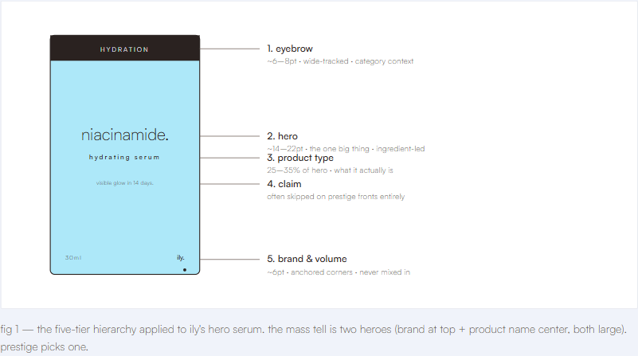
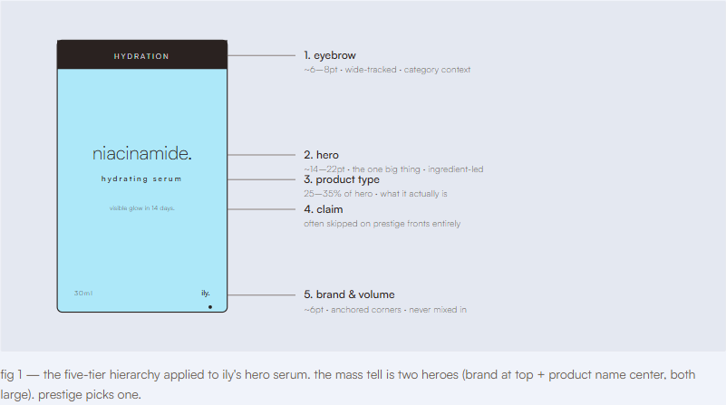
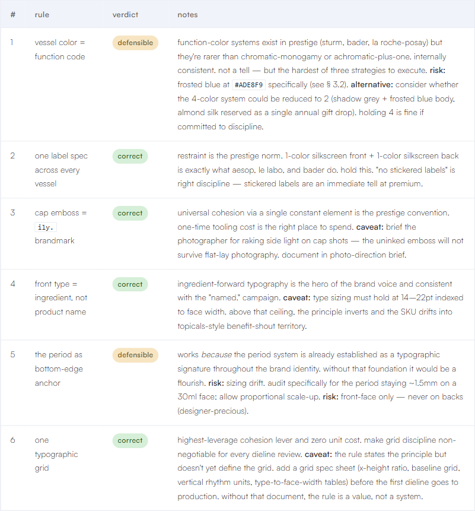
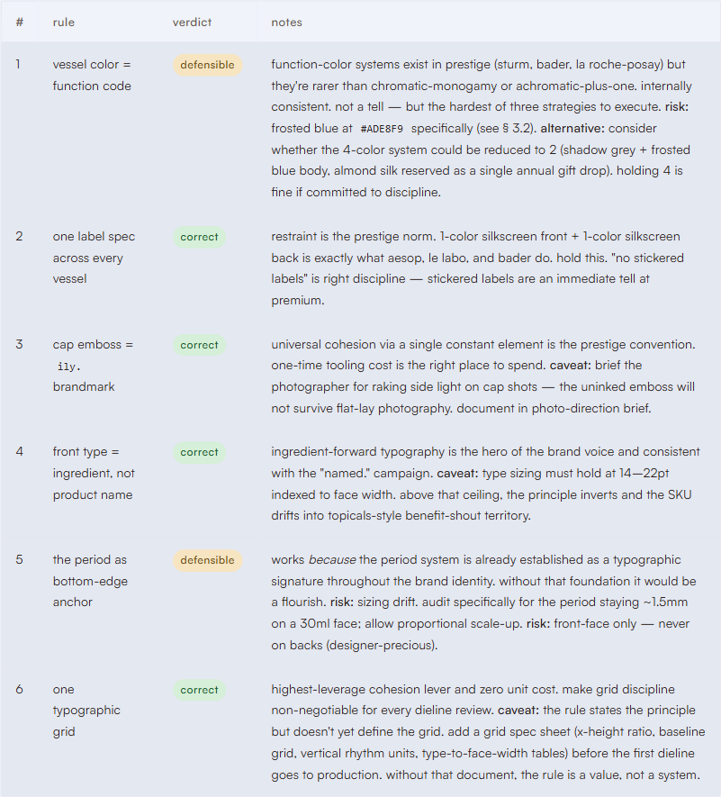
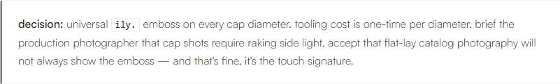
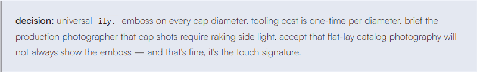

brand & readability critique · 2026-05-02
tuning, not redesigning.
a typographic and brand-rule audit of the 2026-05-01 packaging-standards page. three small dials worth turning. the look thomas likes survives all three changes.
- subject
- audit-2026-05-01.html
- live url
- duttonbrown.github.io/ily-pages/packaging/audit-2026-05-01.html
- measured against
ily-brand/tokens.css·brand-identity.md·brand-voice.md- method
- WCAG 2.1 contrast computation · token-drift diff against
tokens.css· live render comparison via Playwright at 1440×900
verdict.
broadly on-brand. two real perception issues, one rule violation.
the page is broadly on-brand and reads as iloveyouth at a glance. satoshi 300/400/500 only, lowercase voice, ingredient-led typography in the SVG mockups, ghost white surface, frosted blue accent. the structural discipline is real.
two real issues are dragging the page below its potential, and both are exactly what thomas suspected:
- the smallest text is genuinely too light — but it's a weight problem, not a contrast problem. WCAG ratios pass; what hurts is
figcaption,.meta dd, andtdall inheriting the body's satoshi 300 at sub-14px. bumping those three roles to 400 fixes it without losing any of the airy feel. - the eyebrow tracking is past the comfortable threshold —
0.18emon tracked tiny type sits beyond the--ily-tracking-widertoken (0.1em) and beyond the canonical0.16emused on the brand logo-preview surface. the letters disconnect into individual silhouettes rather than reading as a label.
there's also one brand-rule violation the page should fix regardless: pure white #FFFFFF on <code>, <blockquote>, .table-wrap, .figure-frame, .swatch, and nav.toc. tokens.css lines 14–21 and the color-rules memory both say pure white is permitted only for the inverse logo mark and for print media that can't reproduce ghost white. there's already a token for this case: --ily-surface-mid: #E4E8F1.
net. the design instincts are right. three small dials need to turn:
0.18emtracking →0.14emon eyebrows & section markers- weight
300→400onfigcaption,.meta dd,td #FFFFFF→var(--ily-surface-mid)on cards, code, blockquote, table wraps
section 01.
strengths — don't change these.
- single typeface, locked weights. satoshi 300/400/500 only — matches the brand's intentional exclusion of 700/900. hierarchy comes from weight + size + tracking, not from a second family.
- light (300) dominates display type.
h1,h3,.lede,.pullall 300. this is the airy/premium feeltokens.csscalls for, executed correctly. - lowercase everywhere, including labels. no accidental title case, no uppercase eyebrow text — the
text-transform: lowercaseon.eyebrow,h2.section,nav.toc h2is exactly right perbrand-voice.md. - period-as-signature is honored. "contents.", "section 01.", "prioritized action list." — periods on display labels follow the brand-voice signature rule.
- color discipline is mostly intact. body uses
var(--ily-text), surface usesvar(--ily-surface), the pull-quote usesvar(--ily-frosted-blue)correctly with shadow grey text (11.64:1 contrast — AAA). - negative space. generous margins (
5rembetween sections,2rem 0blockquotes) keep the page in prestige-tier proportions, mirroring the audit's own thesis about negative space as a price signal. - tracked-uppercase semantics are right even when tracking is wrong. eyebrows, section markers, axis labels in the SVG diagrams all use tracked tiny type as the hierarchy signal — that's the brand's intended substitute for capitalization.
this is a real expression of the system, not a mock-up dressed in brand colors. most of what's below is tuning.
section 02.
measured contrast — ground truth for "is the small text too light?"
WCAG 2.1 ratios, computed:
| pair | ratio | AA-norm | AAA-norm | used at |
|---|---|---|---|---|
#2A2220 on #F0F3FA (body) | 14.02:1 | pass | pass | h1, h3, h4, h5, body p, links |
#4A3F3A on #F0F3FA (lede) | 9.16:1 | pass | pass | .lede |
#6B5C54 on #F0F3FA (muted) | 5.76:1 | pass | AA only | eyebrow, h2.section, .meta dd, figcaption, th, .swatch .hex, footer, toc h2 |
#6B5C54 on #FFFFFF | 6.39:1 | pass | AA only | (where pure-white violation occurs) |
#1F5E2C on #D6EFD8 (pill green) | 6.38:1 | pass | AA only | .pill.green |
#6E4D14 on #F7E5C2 (pill amber) | 6.20:1 | pass | AA only | .pill.amber |
#7A1F18 on #F5C9C5 (pill red) | 6.90:1 | pass | AA only | .pill.red |
#E5E7EE on #F0F3FA (border) | 1.11:1 | n/a | n/a | every literal border (decorative, not text) |
reading the table. every text role passes WCAG AA. nothing is a contrast failure. the "too light" perception is not a contrast issue — it's a font-weight issue. satoshi 300 at 11–14px on a 5.76:1 ratio looks faint because the strokes are physically thin, not because they're low-contrast. bumping figcaption, .meta dd, and td to weight 400 keeps the muted color but tightens the strokes — the same fix designers reach for on prestige editorial layouts.
the only meaningful AAA gap (5.76:1 vs the 7.0 AAA-normal target) is muted text on ghost white. that's a brand-system issue, not a page-level issue — and the brand has explicitly accepted this trade in the tokens.css docstring (warm muted greys are tested, the page is using them correctly).
section 03.
findings — severity-ranked.
critical pure white surfaces violate the locked color rule
where: audit-2026-05-01.html lines 89, 168, 177, 200, 250, 269 — every background: var(--ily-surface-mid, #E4E8F1):
nav.tocline 89codeline 168blockquoteline 177.table-wrapline 200.figure-frameline 250.swatchline 269
why it matters: tokens.css lines 14–21 and brand-identity.md color → usage rules → rule 4 both lock pure white to two cases only: the inverse logo mark and print media that can't reproduce ghost white. every digital surface, card, container must use ghost white or a deeper surface tone. this is documented as a non-negotiable brand standard.
fix: replace every background: var(--ily-surface-mid, #E4E8F1) with background: var(--ily-surface-mid) (#E4E8F1). the token already exists (tokens.css line 43) precisely for cases where a card needs to read as distinct from the ghost white page background. visual hierarchy survives — see the after-screenshots in §4.
critical eyebrow tracking is outside the documented scale
where: lines 53, 97, 121 — letter-spacing: 0.14em on .eyebrow, nav.toc h2, h2.section.
why it matters: the brand's tracking scale tops at --ily-tracking-wider: 0.1em (tokens.css line 133). the canonical brand surface — logo-preview — uses 0.16em on tracked tiny type. the audit page is at 0.18em, ~12% wider than the canonical reference and 80% wider than the documented token max. at 11.2px (0.7rem), 0.18em pushes individual letterforms past the gap where the eye reads them as a word.
fix: set letter-spacing: 0.14em on these three rules. that's between the documented --ily-tracking-wider (0.1em) and the logo-preview convention (0.16em) — comfortable for tracked tiny type, still clearly tracked. optionally: introduce --ily-tracking-widest: 0.14em to tokens.css so this becomes a token reference instead of a literal.
moderate figcaption is the lightest text on the page
where: lines 241–247 — figcaption { font-size: 0.85rem; font-weight: 300; color: #6B5C54 }.
why it matters: this is the only role that explicitly sets font-weight: 300 at sub-14px in muted gray. body inherits 300 from line 23, but body sits at base size where 300 is fine. at 13.6px, satoshi 300 strokes get visually thin enough that the caption competes with the figure for attention — the eye keeps drifting away from the caption to the more solid surrounding type. this is the single biggest contributor to the "small text feels too light" sensation.
fix: font-weight: 400 on figcaption. color stays muted (#6B5C54) so the caption still reads as secondary; the 400 weight just gives it the structural presence to hold its own beneath the diagram.
moderate .meta dd and td inherit body 300 at sub-base sizes
where: lines 75–81 (.meta 0.85rem, dd inherits 300) and lines 209–214 (td no weight set, inherits 300; line 206 sets table to 0.9rem).
why it matters: same root cause as figcaption. dense secondary content at 13.6–14.4px in satoshi 300 — the meta block and table body are where the eye does most of its scanning work, and they're the lightest scan-content on the page. the dt is already explicitly font-weight: 500 (line 83) which creates a usable contrast against dd, but the contrast is exaggerated when dd is 300 instead of 400.
fix: .meta dd { font-weight: 400 } and td { font-weight: 400 }. don't touch body's 300 — keep that for paragraph display.
moderate type sizes are off-scale
where: most of the inline styles. sizes used: 0.7rem, 0.75rem, 0.8rem, 0.85rem, 0.9rem, 0.95rem, 1rem, 1.05rem, 1.15rem, 1.25rem, 1.5rem (in clamp), 2.25rem (in clamp), 3.25rem (in clamp).
the brand scale (tokens.css lines 100–110): 0.75 / 0.875 / 1 / 1.125 / 1.25 / 1.5 / 1.875 / 2.25 / 3 / 3.75 / 4.5.
why it matters: most of the page's sizes are between scale steps (0.7 instead of 0.75, 0.85 instead of 0.875, 0.95 instead of 1, 1.05 instead of 1.125, 1.15 instead of 1.125 or 1.25). individually these are 6–14% off; collectively they pull the vertical rhythm slightly out of sync. not visible on its own; visible when you stack multiple text elements that should resolve to the same baseline grid and don't quite.
fix: conform to the scale. suggested mapping:
0.7rem→var(--ily-text-xs)(0.75rem) — eyebrows, section markers, toc h20.8rem,0.85rem,0.9rem→var(--ily-text-sm)(0.875rem) — th, td, figcaption, meta, footer, swatch hex0.95rem→var(--ily-text-base)(1rem) — toc ol1.05rem,1.15rem→var(--ily-text-lg)(1.125rem) — pull, lede1.25rem→var(--ily-text-xl)(1.25rem) — h4 (already on-scale)
this is a tidy-up. save it for a token-rationalization pass, not the urgent fix.
moderate .lede color is off the warm-grey ramp
where: line 70 — color: #4A3F3A on .lede.
why it matters: the brand has a documented warm-grey ramp (tokens.css lines 68–76) running through #52453F (grey-700) and #3D332F (grey-800). #4A3F3A is between the two — close to neither. contrast is fine (9.16:1), but the value should snap to the ramp.
fix: either color: var(--ily-grey-700) (#52453F, slightly lighter — better for the airy lede feel) or color: var(--ily-grey-800) (#3D332F). recommend --ily-grey-700 to keep the lede visually distinct from body shadow grey.
nit every border literal could use the token
where: every border: 1px solid #E5E7EE — lines 40, 90, 169, 198, 213, 237, 251, 270, 314.
why it matters: --ily-border is exactly #E5E7EE (tokens.css line 59). the page knows the token exists (it imports tokens.css) but uses literals instead. drift, not a violation — but every literal makes future palette tweaks an N-place edit.
fix: search-and-replace #E5E7EE → var(--ily-border).
nit pill colors aren't tokenized yet
where: lines 296–298 — six literal hexes for green/amber/red status pills.
why it matters: status colors don't yet exist in tokens.css. they probably should, and this audit page is a reasonable place to discover the need. not a brand violation; just an opportunity.
fix: when you next touch tokens.css, add --ily-status-{green,amber,red}-{bg,fg} semantic tokens and rewrite the pill rules to reference them. defer until a second use case appears.
nit letter-spacing literals exist outside the scale
where: 0.04em, 0.01em, -0.005em, -0.015em.
why it matters: page-level fine-tunes. none are brand violations, but --ily-tracking-tight: -0.02em and --ily-tracking-wide: 0.05em already cover most cases. the fine values (0.01em on figcaption, -0.005em on h4) are below perceivable thresholds at their respective sizes — they could probably go to 0 with no visible effect.
fix: defer. not worth touching individually.
section 04.
direct answers to the two specific worries.
1. is the smallest text too light?
yes, but not where you think. the contrast ratios pass — every small-text role is at WCAG AA or better. what's making it feel light is font-weight: 300 inheriting onto sub-14px text, specifically on figcaption (where it's set explicitly), and on .meta dd / td (where it inherits from body). satoshi 300 at 11–14px has thin enough strokes that even at 5.76:1 contrast it reads as faint.
the fix is narrow and surgical:
figcaption { font-weight: 400; } /* was 300 explicit */
.meta dd { font-weight: 400; } /* was 300 inherited */
td { font-weight: 400; } /* was 300 inherited */that's it. do not touch body's 300, do not touch .lede, do not touch the pull-quote. the display weight discipline is the brand's voice — leave it. only the small-and-muted text needs the bump.
see the before/after comparisons in §5 — the difference is real but doesn't change the page's character.
2. is the tracked-uppercase spacing too abrupt?
yes. 0.18em on tracked tiny type is past the readable threshold for short labels. the brand scale maxes at --ily-tracking-wider: 0.1em, and the canonical surface (logo-preview) uses 0.16em.
the fix: drop to 0.14em — between the token and the canonical reference, comfortable for tracked tiny type, still unmistakably tracked.
.eyebrow,
h2.section,
nav.toc h2 {
letter-spacing: 0.14em; /* was 0.18em */
}if 0.14em–0.16em becomes a recurring need across ily-pages, add it to tokens.css as --ily-tracking-widest: 0.14em so it's a token rather than a literal.
section 05.
render comparisons — current vs. proposed.
all screenshots captured at 1440×900 viewport against the live page. left = current production; right = same page with proposed scoped fixes injected via JS, no file changes (verified live on the rendered page).
header & meta block
the eyebrow ("packaging audit · 2026-05-01") is the most visible change. before: each character drifts into its own silhouette. after: it reads as a coherent label. the .meta dd values (right column under "auditor brief", "shelf target") are subtly more present at weight 400 — easier to scan without reading.


table of contents
before: pure white card sits brighter than the page background. the "contents." eyebrow is over-tracked. after: surface-mid card holds the same hierarchy without violating the white rule; eyebrow tracking lands in the comfortable range.


figure with caption
the figcaption goes from 300 to 400. before: visibly fainter than the surrounding body, caption recedes too far. after: caption holds its position as secondary text without disappearing. the white figure-frame card also picks up the surface-mid background.


verdict table
biggest visible difference is the td weight bump (300 → 400) — the rule names ("vessel color = function code", "one label spec across every vessel") read solid instead of thin. the notes column tightens up. the pure-white wrap becomes surface-mid; the inline <code> tag picks up the same.


blockquote with inline code
pure-white blockquote → surface-mid blockquote. the inline <code>ily.</code> chip picks up the same surface tone. hierarchy preserved; brand rule honored.


section 06.
the proposed fix as a CSS patch.
if you want to apply all three changes to the actual file, the patch is small. insert at the bottom of the inline <style> block (or fold into the existing rules):
/* ---- proposed fixes 2026-05-02 ---- */
/* tracking — pull tracked tiny type back into the comfortable range */
.eyebrow,
h2.section,
nav.toc h2 {
letter-spacing: 0.14em;
}
/* weight — solidify the smallest scan-content without touching display 300 */
figcaption,
.meta dd,
td {
font-weight: 400;
}
/* surfaces — replace pure white with surface-mid token */
nav.toc,
code,
blockquote,
.table-wrap,
.figure-frame,
.swatch {
background: var(--ily-surface-mid, #E4E8F1);
}
/* borders — token instead of literal */
header.doc,
nav.toc,
.table-wrap,
.figure-frame,
.swatch,
.swatch .chip,
code,
figure img,
footer.doc {
border-color: var(--ily-border, #E5E7EE);
}
/* lede — snap to the warm-grey ramp */
.lede { color: var(--ily-grey-700, #52453F); }optionally add to tokens.css if 0.14em becomes a recurring tracked-tiny-type value across ily-pages:
--ily-tracking-widest: 0.14em; /* tracked tiny type — eyebrows, section markers */out of scope for this critique: the type-scale conformance pass (mapping 0.7rem → var(--ily-text-xs) etc.) and pill-color tokenization. those are tidy-ups; do them on the next styling pass.
section 07.
what was not changed.
things this critique looked at and intentionally left alone:
- the
h1,h2,h3sizing andclamp()formulas — tier-correct - body weight 300 — central to the brand voice; only the sub-14px inheritances were a problem
- the pull-quote (
.pull) — fine on frosted blue at AAA contrast - the lede weight (300) — appropriate for 18.4px display lede
- color values (shadow grey, frosted blue, ghost white, muted greys) — all on-brand
- spacing rhythm — clean
- the inline SVG diagrams — separate audit; their internal type follows the same conventions and would warrant the same treatment if it were CSS-controlled, but the SVGs are baked
- voice and copy — lowercase, period-as-signature, ingredient-led; on-brand throughout